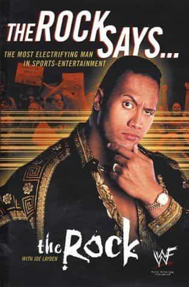

Alfonso Taft is a surfer stoner All-American Aryan alpha male quarterback. Raised in the Northeast, he speaks with a Southern twang for no apparent reason. Host of America's #1 Chadcast.


There are great lessons to be learned in the biographies of prolific men. Contemporary masculine biographies are somewhat rare considering the massive pussifcation that’s taking place. Luckily, the manosphere provides an outlet for men looking to escape the horrors of clown world a place to study the plights of modern-day alphas who live a masculine lifestyle despite a demonstrably feminized culture.
Within the biographies highlighted below are lessons in game, SMV, determination, life, and success. Before reaching high status, both of these men spent time at rock bottom.

The manosphere is stocked with content about turning betas into alphas — but what about those of us who were born physiologically alpha? How do we enhance our alpha game? How do we stay engaged in the game when we’re given a genetic advantage over most competitors? Overlooked in the manosphere no longer is Dwayne Johnson’s 1999 autobiography The Rock Says.
A physical specimen by the age of fifteen, Dwayne “The Rock” Johnson discovered his alpha game early.
“I was fifteen years old and looked like a grown man. And I was constantly in the weight room, jacking iron for two, three hours a day.”
The Rock is a man who has checked man-a-buttcheek into the Smackdown Hotel. Equipped with an alpha mentality fueled by lifting, dedication, and competition, the power of confidence and charisma came to The Rock naturally and his game was deduced to a simple rule:
“If you acted confident around girls, they naturally assumed you were mature and experienced. It was all a game, and I excelled at it from a ridiculously early age.”
Charisma is a key component to enhancing one’s alpha game. The flashy, 270-pounder known as “The most electrifying man in sports-entertainment” is a case study in charisma. If you want to study charisma, study The Rock. There is nobody else that needs to be studied in this subject. Observe:
An element of charisma is the art of talking shit. An artform The Rock perfected while playing football at The University of Miami and later as a professional wrestler. Talking shit increases alpha status to prolific levels and is a skill reserved for advanced alphas only.
When Alpha game charisma is combined with status, a man becomes a force of nature. The Rock acquired his status via fierce determination despite devastating setbacks.
While at The University of Miami, The Rock was beaten for the Defensive tackle starting position by NFL legend Warren Sapp and later suffered a catastrophic injury during his senior season. Dwayne “The Rock” Johnson was overlooked by the NFL and decided to take his talents to Canada where he was “playing professional football for approximately $250 in U.S. currency. Take-home pay? About $175.”
A far cry from the uber-celebrity we see now, The Rock remembers a time when “None of us could afford a car, we had to borrow a teammate’s truck. We all piled and headed off on a glorious quest for bedding. We had no intention of buying anything. We were counting on the kindness of strangers. After a while we found a crappy motel that was in the process of replacing all of its mattresses.”
“And that’s the way we lived — four grown men sleeping on piss-stained mattresses in a small, unfurnished apartment.”
In 1995, when The Rock had $7 in his pocket he claims he “Knew Two Things: I’m Broke As Hell and One Day I Won’t Be.” He was correct. His alpha mentality could not be shaken by the coldest of Canadian football winds or the dampest of used mattresses. He later left Canada and began a career as a professional wrestler like his father and grandfather.
Click here to view The Rock Says on Amazon.
Few men will reach the arena of rock star game. Anthony Kiedis, lead singer of The Red Hot Chilli Peppers did in a big way. For men, Scar Tissue offers a lesson in SMV and for those looking to take the Rock Star route — it doesn’t seem like a bad play.
Personally, I’ve fallen victim to rock star game when I lost a model girlfriend to a short, fat, techno DJ. The neighbor I grew up with is a bass player in a metal band and is now accompanied by a 12 out 10 IGthotmoodel girlfriend. Rock star game might be the most elevated of all. Few can match the SMV of a wealthy, high status, risk-taking leader with a massive following.
The confidence of Kiedis is paramount and he seemed to have total clairvoyance in regards to long-term relationships.
“At that very moment, my destiny became clear to me. She was my new girlfriend. As she walked into the room, I whispered to every dude who was near, “Back off. That’s my girl.” Then I walked straight over to her.
“Hi, my name’s Carmen,” she said. “I’m visiting from San Diego.”
I introduced myself and told her that we’d be hanging out for the next year or so, and she seemed amenable.”
Rock star game is fruitful, although there are some dangerous pitfalls. Scar Tissue works as a cautionary tale for aspiring rock stars. There are tons of drugs, and I mean TONS of drugs bought, sold, and consumed in this autobiography. Seemingly pleasant songs like “Scar Tissue” and “Under the Bridge” are about heroin. The amount of junk in this biography makes a man feel naive. Anthony’s father was a notorious Southern California drug dealer named “Spider.”
“If Keith Moon or the guys from Led Zeppelin or Alice Cooper was in town, they’d be sitting with Spider, because he was the coolest guy in the house.”
The only thing that curves Kiedis’ insatiable appetite for hard drugs are the beautiful women he draws inspiration from.
Scar Tissue introduced me to a new concept, the muse. The muse, or divine feminine inspiration is used by Kiedis throughout his career. He is not purely a hedonist, rather, he falls in love frequently. For a truly red pilled man it is wise to draw inspiration from the feminine versus the black pilled incel who sees women as a point of frustration and despair.
Click here to view Scar Tissue on Amazon.
Masculine biographies are like studying a playbook. A blueprint is provided for a successful masculine lifestyle. It’s beneficial for men to study the plights of other prolific men as a way to guide their own life. Perspective is a valuable tool.
Read More: 4 Books that Help You Make Sense of The Decline of Western Civilization